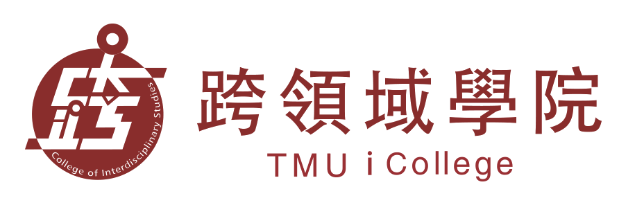
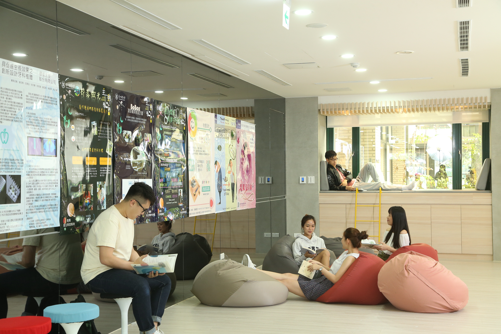
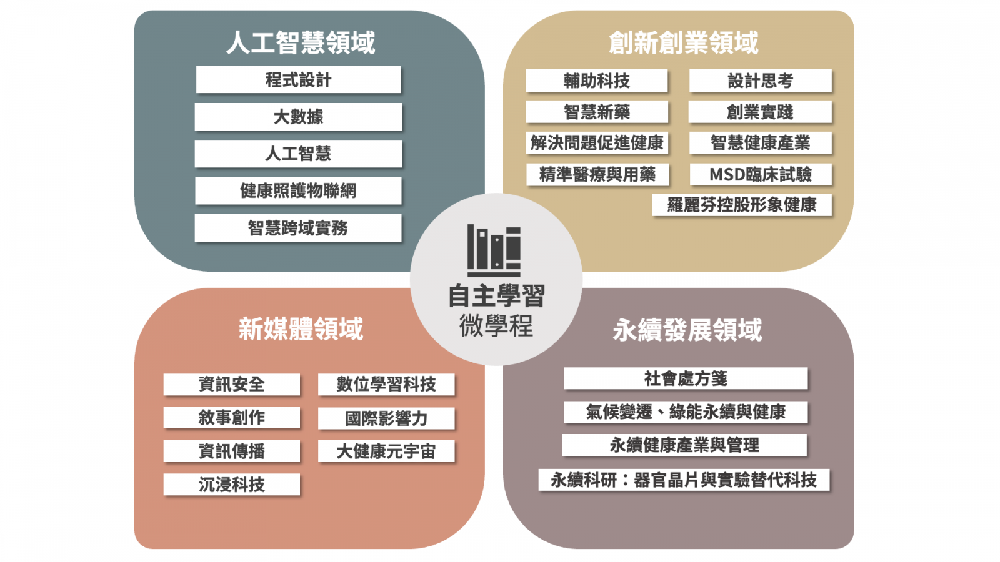
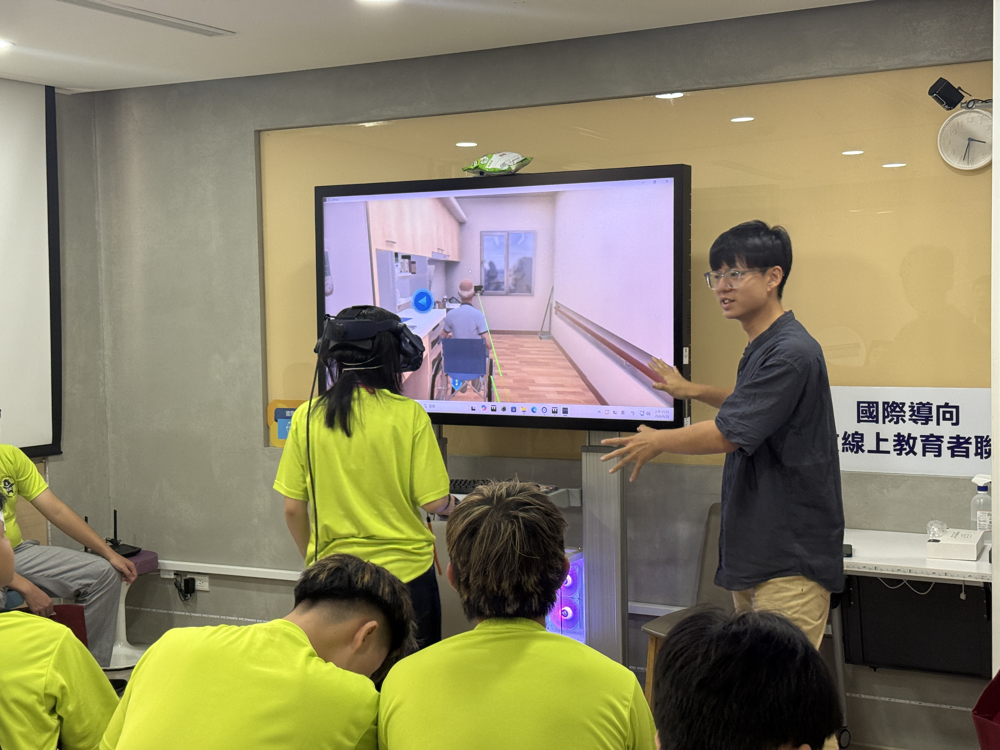

臺北醫學大學跨領域學院
串連醫療、科技、創新創業、數位學習與社會實踐，成為外部單位合作與學生使用跨域資源的共同入口。
醫療創新不只是醫療端的問題
AI、資料、永續、高齡照護與社區健康，都需要跨學科與跨場域合作。跨領域學院正好扮演校內資源整合與對外合作的入口。
跨領域學院小檔案
成立於 2018 年，是北醫第十一個學院，位於信義校區杏春樓 1F / B1F，整合課程、場域、數位學習與創新資源。
真實場域
從醫療與健康需求出發，避免創新停留在概念。
多元人才
讓不同背景的學生、教師與外部夥伴共同解題。
可用資源
課程、空間、VR LAB 與團隊進駐資源。
合作路徑
從活動、課程、專題到長期合作都能承接。
單位簡介：跨領域學院
本校於 2018 年成立第十一個學院「跨領域學院」，專司發展醫療外知識與技能領域之教學，並以課程、資源與場域支援跨域合作。
教育任務
整合跨院系教學資源，發展前瞻趨勢課程，讓學生提早接觸 AI、永續與新媒體等跨域題材。
服務對象
提供學生、教師與外部夥伴共創的入口，讓合作能從活動一路延伸到長期方案。
三中心一學程
跨領域學習中心、創新創業教育中心、數位自學中心與智慧醫療跨領域學士學位學程，形成完整支援系統。

我們不是單一課程單位， 而是跨域合作平台
跨領域學院把校內外資源轉譯成學生能使用、教師能共創、外部單位能合作的學習與實作系統，讓知識、場域與夥伴關係能真正互相接起來。
我們看見的合作模式
從醫院需求、產業命題、社區議題到國際交流，跨域團隊都能在這裡被組織起來，形成可持續的合作路徑。
順應世界趨勢
培養具備跨領域知能與創新思維的未來人才，打破單一學科的侷限。
核心理念
發展跨域合作、強化實作與創新能力，形成整合性的學習環境。
發展目標
- 整合校內外優質資源，提供前瞻性的學習路徑。
- 拓展學生系統化學習資源，讓每位學生找到屬於自己的學習軌跡。
- 把課程、微學程與實作場域串接成完整的跨域學習生態。

我們培養能與外部單位共同解題的人
主動探索
看見問題、界定問題，理解不同利害關係人的需求。
創新實踐
把想法推進為可測試、可溝通、可迭代的解方。
團隊整合
在跨學科團隊中溝通、協作並推動共同成果。
全球適應
理解國際學習資源與全球議題，建立開放視野。
自主學習
以數位工具與長期自學能力，持續更新專業組合。
案例 01｜臨床需求訪談
從病房或門診痛點開始，練習把模糊問題轉譯成可討論的合作題目。
案例 02｜跨系小專題
醫療、設計與工程學生共同完成一個小型原型，訓練溝通與整合。
案例 03｜國際共學
透過線上課程與海外資源，建立跨文化學習與資料查找能力。
案例 04｜自學加值
用數位工具安排學習節奏，讓能力累積成第二專長。
跨領域學習中心
透過課程、教師社群與跨校資源，讓學習具備系統性與可連結性。
中心角色
把微學程、跨領域課程與教師共備串成一條完整路徑，讓學生能依需求修習不同組合。
重點內容
規劃跨領域課程、微學程、社群與實作場域，讓學生能以不同方式進入合作。

微學程
讓學生可依主題自由組合課程。
教師社群
串起跨院系共備與課程整合。
創新創業教育中心
以課程與輔導培育創新能力，銜接校內外新創資源與團隊進駐。
教學、輔導與實作並進
透過課程、工作坊與活動，協助學生把創意變成可執行的方案。
申請進駐與設備借用
提供輔導申請、空間與設備借用、校內導師與校外業師媒合。
從課程走到團隊成形
串接國內外創業資源與競賽補助，讓團隊更容易往實作前進。
北醫創新創業教育中心
創造產學臨床鏈結，建立醫療創新價值。
可帶進頁面的重點
活動與競賽、進駐申請、輔導服務、空間與設備借用，都是合作與創業支援的入口。
營養與健康陪跑主題，強調飲食與療癒式支持。
校園 Google 開發者社群，串接技術交流與專案合作。
以社區藥事照護與數位健康管理為核心。
AI 美食搜尋平台，結合外食需求與使用體驗。
連結跨校技術學習與共同解題的學生社群。
牙科 3D 列印與數位建模應用，對接實務工具。
數位自學中心
導入國際優質磨課師課程與開放教育資源，支援自主學習與全球共學。
學習特點
學生可以依自己的節奏，透過數位資源累積專業與跨域知能。
用沉浸式技術體驗場景
官方資源中提供 VR LAB 與數位自學資源，可補強臨場感與模擬式學習。
把學習進度變成可追蹤
串接數位自學系統與跨域課程，讓學生可以用自己的節奏完成學習。

智慧醫療跨領域學士學位學程
以人工智慧為導向，結合生醫知識與實際應用，提供面向 AI Healthcare 的完整學習路徑。
現況挑戰 01
懂醫療的不懂程式，臨床痛點無法有效轉化為運算問題。
現況挑戰 02
懂程式的不懂醫療，工程師缺乏對生醫資料特性的理解。
學程特色
從醫療需求、AI 技術到實務應用，建立完整的跨域學習鏈。
學程架構
結合人工智慧學分學程、創新創業學分學程、新媒體學分學程與永續發展學分學程。
學習目標
讓學生具備醫療與科技的雙重理解，並能把概念轉換成可落地的應用。
智慧醫療解方
培育雙語人才、使用與微調 AI 工具、AI 協作解決臨床痛點，讓學生成為醫療與技術之間的橋樑。
培育雙語人才
同時精通醫學術語與程式語言，打破跨域溝通障礙。
使用與微調 AI 工具
不必鑽研底層演算法，也能讀懂並修改現成工具以符合臨床需求。
AI 協作解決痛點
成為醫療與技術的橋樑，有效縮短流程並提升醫療品質。
學院亮點
依官方亮點頁與學院首頁整理，聚焦跨域合作、課程整合與資源串接。
跨域課程與微學程
整合跨領域學習中心、課程與教師社群，讓不同專長能共同備課、共同學習。
資源整合與共用
把課程、場域、VR LAB 與數位自學資源整合起來，讓合作更容易啟動。
跨域合作平台
串接教學、活動與實作，強調教師、學生與外部單位一起參與。
學院不是單點單位，而是整合平台
從教學、實作到資源，形成跨域合作入口。
教師、學生與外部夥伴共同參與
讓合作從課程開始，延伸到工作坊與專題。
聚焦跨域合作與資源整合
將學院亮點整理成可直接對外溝通的一頁內容。
讓醫療創新合作，從一個清楚的入口開始
台北醫學大學跨領域學院歡迎外部單位以議題、課程、活動、資源或實作場域切入合作。
跨領域學院
https://cis.tmu.edu.tw/
創新創業教育中心
https://ieec.tmu.edu.tw/
數位自學與 VR LAB
VR LAB、數位自學系統與開放資源可在此延伸。
智慧醫療學程
以 AI 與生醫整合出發，連結跨域學習路徑。
主要資料來源
跨領域學院官方網站、學院簡介、各中心與學程頁面，以及校內公開網站與連結頁面。